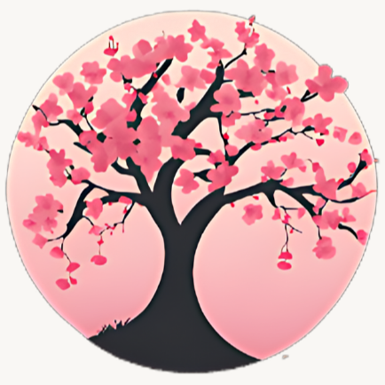

THE BETTER NATURE JOURNALNotes from
Notes from
the work.
Food rescued. Forests restored. Waterways cared for. Stories and perspectives from the people making it happen.
Loading published stories…

BetterNatureFood rescued. Forests restored. Waterways cared for. Stories and perspectives from the people making it happen.
Loading published stories…